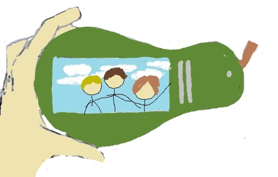

The Pear Phone Ultimate is the greatest electronic device ever designed by the human race! The Pear Phone Ultimate has every feature needed to ensure the ultimate experience.
“This phone is a stand-out purely because it does not look like other phones out in the market right now, or anyone that has existed, and that’s a good thing. What separates this one further is the advancement of almost all the features that we know from previous phones. This is worth the wait in line.” -PhoneTechUSA in Gadgets Magazine (border)
This is the 1st Generation of the Pear Phone, but with all of the years of studying current and past designs of mobile phones in one handheld device. After years of testing with new software and a new pixel configuration, the Pear Phone 1 will be different than anything you have ever bought. Because this is the first official mobile device from our company, we will provide a satisfaction guarantee where if you decide that the Pear Phone is not the fit for you, bring it back and you can choose to get your whole money back or pick to spend some on our line of luxury headphones.
